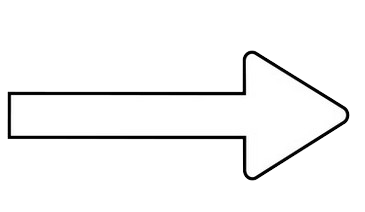
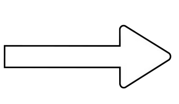

 Université de Rennes
IUT de Lannion (22)
Domaine : Audio-visuel,
developpement web, communication
et marketing
Clain Lucas
Étudiant en MMI
Recherchant une alternance en développement web
Passionné du numérique et du développement web, je suis Lucas Clain, étudiant de 18 ans. Je vis à Morlaix et j’ai intégré le BUT MMI à l’IUT de Lannion. Grâce à mon parcours à l’IUT, je m’améliore dans le développement web et dans divers autres domaines du multimédia comme l’audio-visuel, et la gestion de projet. De plus, cette formation me permet de mieux comprendre le milieu professionnel et le monde des entreprises. Cependant, je recherche davantage d’expérience professionnelle et c’est pour cette raison que je souhaite faire une alternance pour en apprendre encore plus sur le monde du travail et des entreprises.
J’ai éveillé mon goût pour le développement web au collège lors d’un cours de NSI et depuis ce jours je me suis fixé pour objectif, qu’un jour, j’en ferais mon métier. J’ai adoré directement le développement web car j’aime l’aspect concret de ce domaine. En effet, selon moi, construire un site web est très satisfaisant car on le voit se développer au fur et à mesure de notre travail.
(2024 - En cours)
 Université de Rennes
IUT de Lannion (22)
Domaine : Audio-visuel,
developpement web, communication
et marketing
(2024 - En cours)
Lycée Tristan Corbière, Morlaix (29)
Mention Bien
spécialité mathématique et NSI
L’objectif du projet est de réaliser un site web qui permettra de gérer une collection de Pokémon. Sur ce site on peut rajouter et supprimer des Pokémons de sa collection.
L’objectif du projet est de réaliser, en groupe, un jeu coopératif en programmant des cartes microbits et en utilisant du javascript.
L’objectif du projet est de réaliser une affiche pour le festival A l’West Fest
Lors de mon année de 3ème j'ai eu l'occasion de faire un stage dans une entreprise privée spécialisée dans la vente de chaussure appelée Chausséa. Au sein de cette entreprise j'ai été chargé de ranger les rayons, étiqueter les boîtes et déballer les cartons
J'essaie de toujours finir chacun des projets que je commence même si je ne suis pas très à l'aise avec le domaine de celui-ci. On peut par exemple citer l'audit que moi et mon groupe avons réalisé en 2024 pour le chantier naval Hénaff. Il s'agit d'un projet de communication, et malgrès le fait que je ne soit pas très à l'aise dans ce domaine je suis quand même venu à bout de ce projet.
J'écoute et je respecte toujours les consignes qui me sont indiquées. Je suis capable de continuer d'exprimer ma créativité tout en respectant les contraintes fournies par le client.
Le respect des deadlines des projets est capital pour moi je ferai toujours en sorte de finir un projet dans les temps et que ce travail soit qualitatif.
En dehors du développement web :
J’adore me promener en nature, sur les bords de mer ou encore dans la forêt car ces paysages m’inspirent et m’aident à me ressourcer.
J’aime également jouer aux jeux vidéos notamment les jeux de type bac à sable comme Minecraft dans lesquels on peut créer ce que l’on veut car ces types de jeux me permettent de développer et exercer ma créativité.